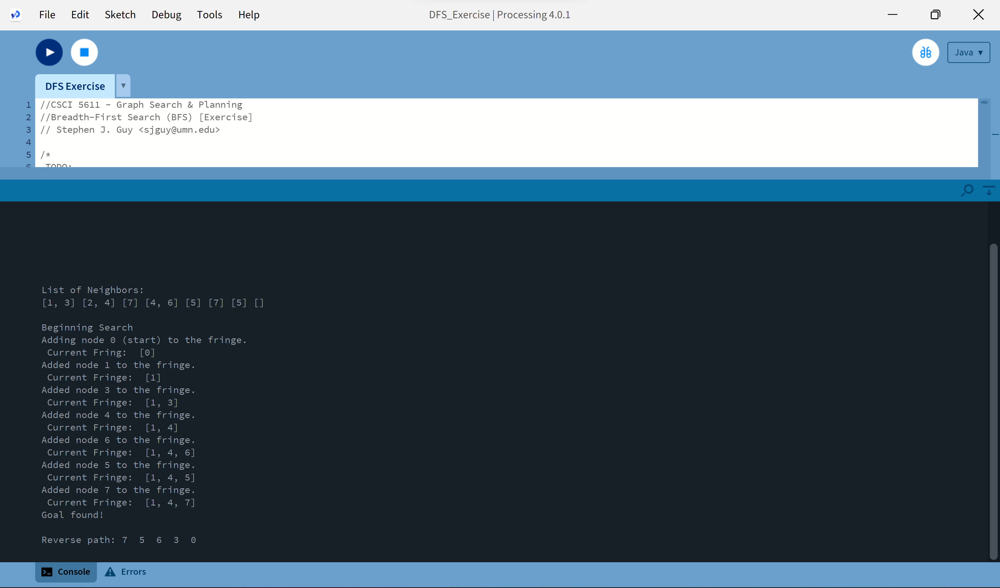

This is my website submission for Homework 1 in CSCI 5611
As you can hopefully see in the video, I did the maximum acceleration challenge, so the ball has a weightier feel when starting to come towards the mouse. The source code can be found here.
The simple particle system is mostly standard, but there is code to delete balls after they have existed for a certain period of time. The source code can be found here.
No challenges were done in my TTC forces project. It just calculates forces and collisions. The source code can be found here.
No challenges were done in my Tree Search project. It simple runs Depth-First Search like asked. The source code can be found here.
No challenges were done in my PRM project. It allows refreshing of the PRM and the moving of the box obstacle, just like instructions asked for. The source code can be found here.